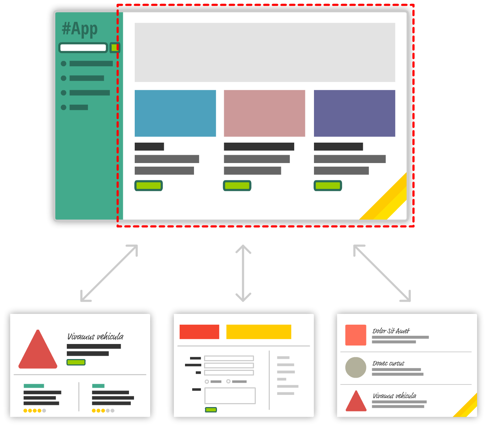

Modern web application development paradigm made possible by AJAX and asynchronous programming
A module is a reusable piece of code that encapsulates implementation details and exposes public methods so it can be used by other code
Modules should allow us to:
Before ES6, no official syntax to define modules existed and developers were often times forced to choose between:
<!--
developers used to write a bunch of script tags with implicit dependencies that had to be
manually ordered and pray for no ordering issues or collisions on the global scope...
-->
<script src="https://cdnjs.cloudflare.com/ajax/libs/modernizr/2.8.3/modernizr.min.js"></script>
<script src="https://code.jquery.com/jquery-3.2.1.min.js"></script>
<script src="https://maxcdn.bootstrapcdn.com/bootstrap/4.0.0/js/bootstrap.min.js"></script>
<script src="https://www.google-analytics.com/analytics.js"></script>
<script src="js/main.js"></script>
<script src="js/module1.js"></script>
<script src="js/module2.js"></script>
<script src="js/module3.js"></script>
Various formats to define modules in JavaScript were developed, minimizing the lack of native JavaScript module syntax
Some of the most widely adapted and well known formats are:
ES6 introduced a new standardized module format natively supported by modern browsers
The mechanism for module loading is provided by the hosting environment (browser, node, webpack, etc.)
The export keyword can be used in front of a declaration or as an operator with a list of bindings to export
// all API members as named exports
export function add() { } // export add binding
export let multiplier = 100; // export multiplier binding
let odds = [1, 3, 5];
let evens = [2, 4, 6]
let zero = 0;
export { odds, evens }; // export odds and evens bindings
export zero as nil; // export nil as alias to zero binding
// one default export per module
export default function substract() { } // default export
ES6 modules export immutable bindings, not values or
references
The import keyword can be used to load a module from another one
//// loads, compiles and evaluates the module without actually importing any of its bindings
import "module";
// import the default export as sub
import sub from "module";
// import the named exports add and multiplier (aliased to mul)
import { add, multiplier as mul } from "module";
// import the entire module API to the single math namespace
import * as math from "module";
import only the specific bindings from a module that are required
The latest browsers are already supporting module loading
<script type="module">
import { addTextToBody } from "./utils.js";
await addTextToBody("Modules without babel/webpack!!!");
</script>
// utils.js
export async function addTextToBody(text) {
const div = document.createElement("div");
div.textContent = text;
document.body.appendChild(div);
return somethingAsync();
}
The type="module" attribute tells the
browser to load the inline or external script as an
ES6 module
High level await is supported in modules
The import() syntax allow us to load modules conditionally or on demand, unlike static imports, which are loaded at the beginning of the program
// index.js
const link = document.querySelector("a");
link.addEventListener("click", (e) => {
e.preventDefault();
try {
const module = await import("./my-module.js")
module.doSomething();
} catch (error) {
console.error("Failed to load the module", error);
}
});
The SPA model breaks the browser page history navigation using the Forward/Back buttons
Both Hash-based routing and the HTML5 History API enable modifications to the page URL without reloading the page, allowing creation of separate URLs for different views
URLs can contain some data prepended with a
# character
This data is called the
hash fragment
const routes = {
home: {
hash: '#home',
controller: 'homeController'
},
info: {
hash: '#info',
controller: 'infoController'
}
}
window.addEventListener('hashChange' function(){
const controllerName = Object.keys(routes)
.find(route => route.hash === window.location.hash);
});
Changes in the hash fragment never trigger a page
reload and can be used for storing the state of the
client application
Allows modifications to the browser's navigation stack through JavaScript. Enables current URL changes without triggering requests.

const routes = {
home: {
path: "/home",
controller: "homeController",
},
info: {
path: "/info",
controller: "infoController",
},
};
// accesible through the `window` object
console.log(window.history);
// changes current url to `/home`
// adds a new entry to the navigation stack
window.history.pushState(routes[0].home, "", routes[0].home.path);
// changes current url to `/info`
// replaces the last entry in the navigation stack
window.history.replaceState(routes[0].home, "", routes[0].home.path);
// Event handler will be called everytime user navigates
// on your website using back/forward buttons
// Will include the associated state object in
// the callback function's argument
window.addEventListener("popstate", function (event) {
console.log(`User navigation!`);
console.log(`Location: ${document.location.pathname}`);
console.log(`State:`, event.state);
});
The second parameter exists for historical reasons,
and cannot be omitted; passing the empty string is
traditional, and safe against future changes to the
method.
The choice between them depends on the requirements of the application:
Hash-based routing is a good choice for small applications, or when you don't have control over the server configuration or when you need to support older browsers
History API is a better choice for larger applications, where you need to have full control over the URL and the navigation stack
Don't forget to overide the default behavior of HTML elements that manipulate the Browser History Stack